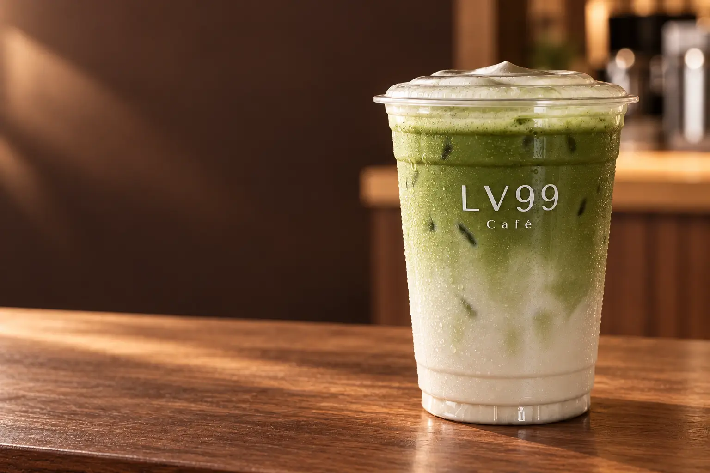

ตัวเลือกสำหรับดื่มได้ทุกวัน
Pure Matcha 70 · Matcha Latte 75

Genuine matcha · Two grades
มัทฉะแท้เลือกได้ในแบบของคุณ
เราใช้ผงมัทฉะแท้คุณภาพดี ชงสดเป็นแก้ว มีทั้ง Premium สำหรับดื่มได้ทุกวัน และ Ceremonial สำหรับผู้ที่อยากสัมผัสมัทฉะในระดับที่ละเอียดขึ้น
70บาท · Pure Matcha เริ่มต้น
มาลองที่ร้าน ↗Choose your matcha
สองเกรด สองระดับ
สำหรับรสชาติที่คุณชอบ
มัทฉะไม่ใช่เพียงเครื่องดื่มสีเขียว แต่คือใบชาที่บดเป็นผงละเอียด กลิ่น สี และรสจึงขึ้นอยู่กับคุณภาพของผงชาและวิธีชงโดยตรง
ที่ LV99coffee เรามีผงมัทฉะแท้ให้เลือก 2 เกรด และชงได้ทั้งแบบ Pure Matcha ผสมน้ำแร่เพื่อให้รสชาชัด หรือ Matcha Latte ที่นุ่มขึ้นด้วยนม
ตัวเลือกเกรดสูงขึ้นสำหรับผู้ที่อยากสัมผัสรายละเอียดของมัทฉะ
Pure Matcha 90 · Matcha Latte 95
ชงสดเป็นแก้ว พร้อมน้ำแข็งจากน้ำกรองที่ผลิตภายในร้าน
Matcha, honestly
ประโยชน์และเรื่องน่ารู้
ของชาเขียวมัทฉะ
มัทฉะมีสารธรรมชาติที่น่าสนใจ แต่เราเลือกเล่าตามหลักฐานและไม่ใช้คำกล่าวอ้างว่ารักษาโรค ลดน้ำหนัก หรือให้ผลเหมือนกันกับทุกคน
มีคาเทชินตามธรรมชาติ
ชาเขียวมีสารพฤกษเคมีกลุ่มโพลีฟีนอล โดยคาเทชินเป็นกลุ่มที่ได้รับการศึกษาอย่างกว้างขวาง อย่างไรก็ตาม ปริมาณจริงต่างกันตามวัตถุดิบ การผลิต และสูตรเครื่องดื่ม จึงไม่ควรนำข้อมูลของสารสกัดเข้มข้นมาเทียบตรง ๆ กับมัทฉะหนึ่งแก้ว
มีคาเฟอีน
มัทฉะและชาเขียวมีคาเฟอีนตามธรรมชาติ จึงอาจช่วยให้รู้สึกตื่นตัว แต่ปริมาณและการตอบสนองแตกต่างกันในแต่ละคน ผู้ที่ไวต่อคาเฟอีนควรหลีกเลี่ยงใกล้เวลานอน
เครื่องดื่มต่างจากอาหารเสริม
EFSA ระบุว่าเครื่องดื่มชาเขียวโดยทั่วไปถือว่าปลอดภัยสำหรับผู้ใหญ่ ขณะที่สารสกัดชาเขียวเข้มข้นในอาหารเสริมเป็นอีกบริบทหนึ่งและมีข้อควรระวังต่างกัน เนื้อหาในหน้านี้กล่าวถึงเครื่องดื่มที่ร้าน ไม่ใช่อาหารเสริม
สูตรนมและความหวานมีผล
Pure Matcha กับ Matcha Latte ให้ประสบการณ์และพลังงานต่างกัน สูตรที่มีนมหรือความหวานย่อมให้พลังงานเพิ่มเติม ผู้ที่ควบคุมน้ำตาลหรือมีข้อจำกัดด้านอาหารควรเลือกสูตรและปริมาณที่เหมาะกับตนเอง
แหล่งข้อมูล: NCCIH: Green Tea · FDA: Caffeine · EFSA: Green Tea Catechins
ข้อมูลนี้เป็นข้อมูลทั่วไป ไม่ใช่คำแนะนำทางการแพทย์
Find your cup
เลือกเกรด แล้วค้นหาแก้วมัทฉะที่ใช่สำหรับคุณ
ร้านอยู่บริเวณปากซอยเจริญกรุง 9 ห่างจาก MRT สามยอดประมาณ 140 เมตร เปิดจันทร์–เสาร์ เวลา 07:30–16:30 น.